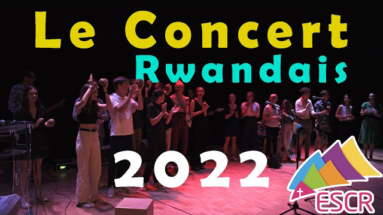
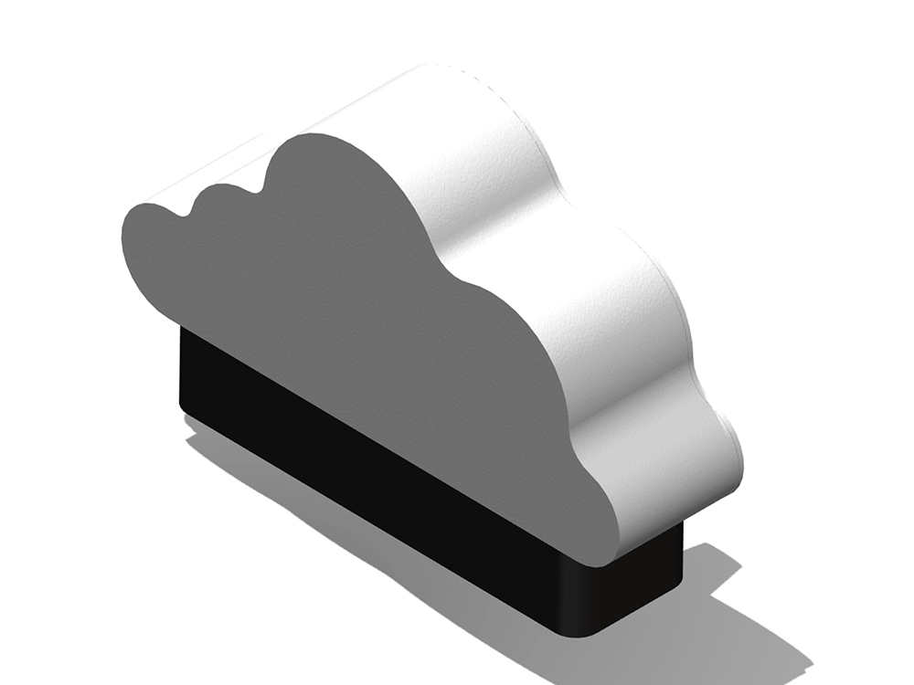
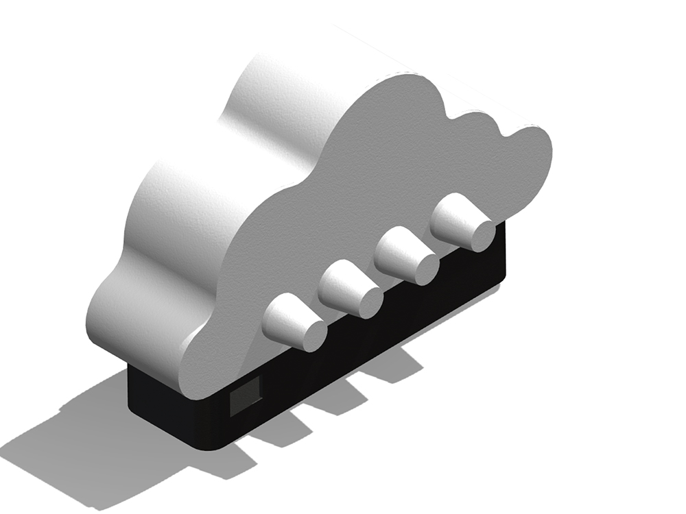
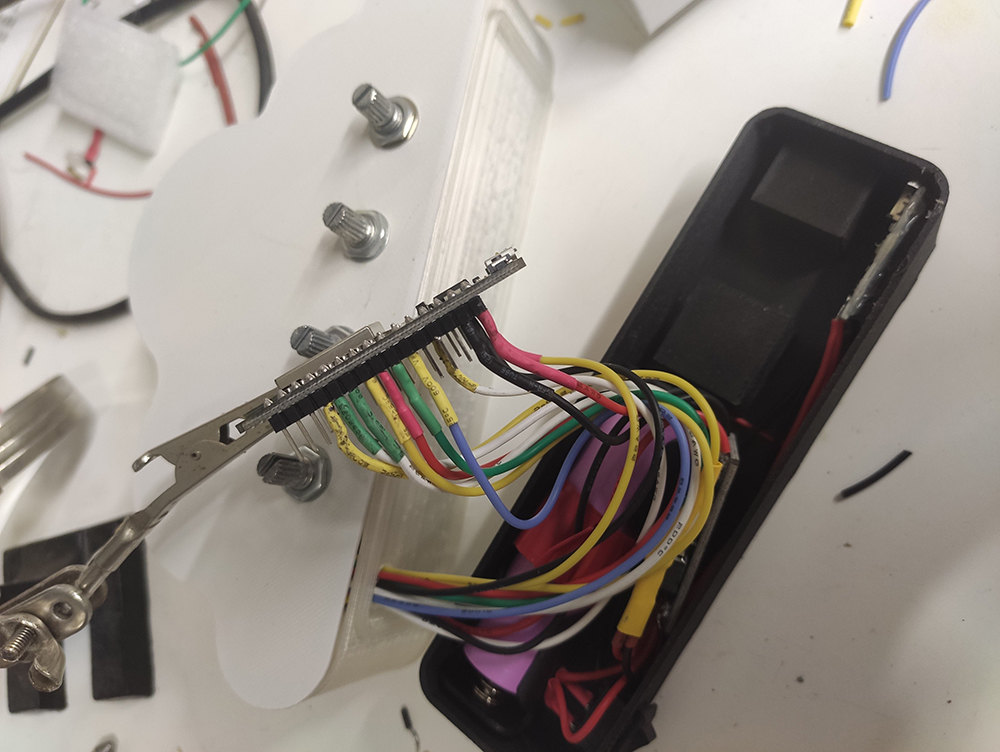
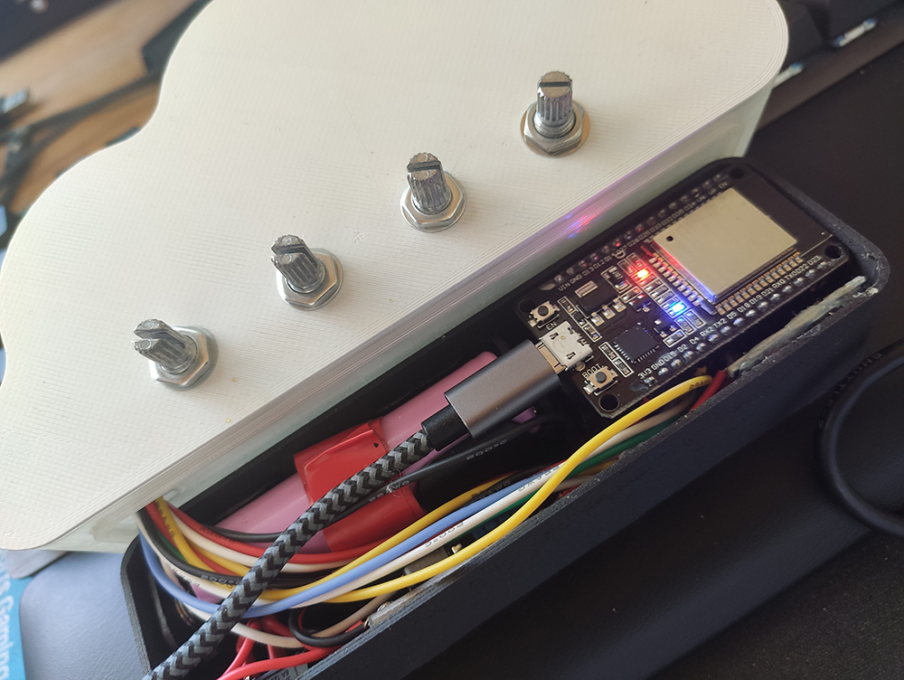
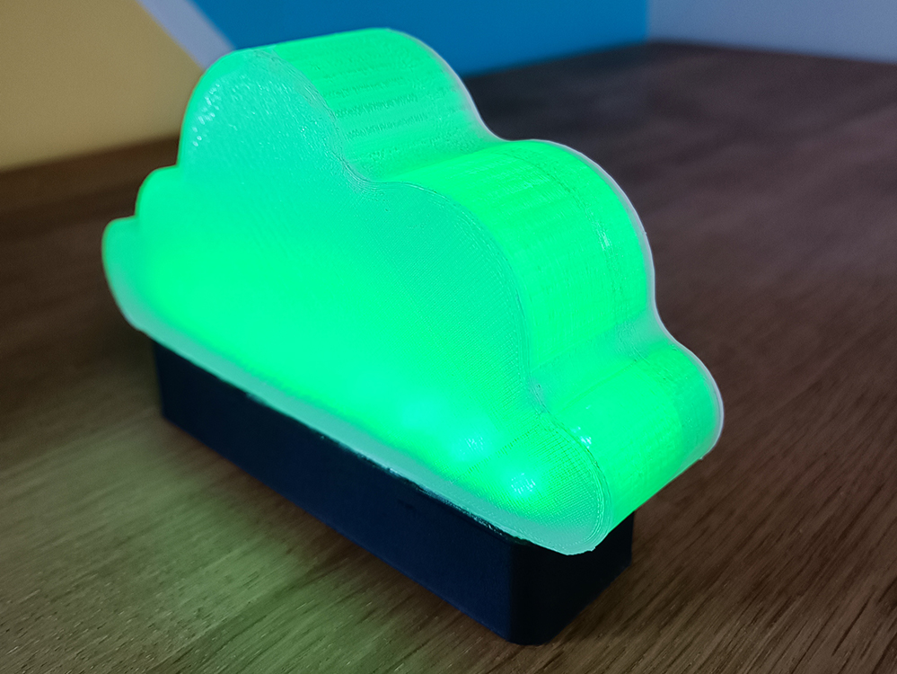
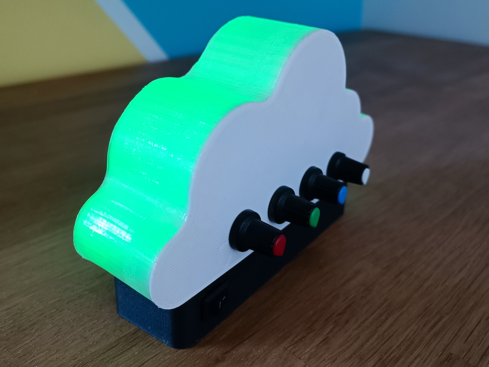

Je m'intéresse depuis petit à la photo, et j'ai eu mon premier appareil photo en 2017, un Nikon D5600, avec lequel j'ai appris et progressé en photo.
Ma passion pour la vidéo est arrivée un peu plus tard, avec la volonté de créer des contenus vidéo qualitatifs.
Logiciel utilisé : DaVinci Resolve
Voici quelques exemples de vidéos :
Vidéo du concert des lycéens, Mai 2022

Vidéo réalisé suite au concert des lycéens, au profit du projet solidarité Rwanda.
Nous avons réalisé cette vidéo à 3 pour participer au concours Jeune reporters pour l'environnement. Nous avons obtenu la 3ème place du concours grâce à cette vidéo
Exemple de projet contenant un ensemble de mes passions
modélisation et impression 3D
But du projet : réaliser 2 lampes connectées ensemble.
Lorsque les potentiomètres sont bougés sur une lampe, l'autre lampe s'allume de la couleur choisie, et inversement.


Modélisation 3D de la lampe nuage, avant impression
(Logiciel utilisé : Solidworks)
éléctronique et domotique


Ajout des composants électronique
L'électronique de la lampe est composée plus précisément d'un ESP32, un microcontrôleur équipé du WIFI et du Bluetooth.
La lampe intègre également un ruban led WS2812B, c'est un ruban led où l'on peut contrôler chaque LED de manière indépendante.
Il y a aussi 4 potentiomètres pour sélectionner la couleur voulue (valeur de rouge, bleu, vert et blanc).
Enfin pour alimenter le tout : une batterie Li-Ion 18650 en 3.7V, avec une capacité de 2.5Ah et un module de charge TP046 (avec port USB-C pour la charge)


Photos de la lampe nuage après impression et ajouts des composants.
La lampe est connectée en wifi ce qui lui permet d'accéder à un serveur MQTT distant.
MQTT est un protocole basé sur TCP/IP permettant d'envoyer et de recevoir des messages.
Lorsque l'on tourne les potentiomètres, la valeur de chaque composante de couleur
est envoyée en MQTT à l'autre lampe pour changer sa couleur.
Grâce à Node-Red, il est possible d'interagir avec le serveur MQTT depuis une page web,
ce qui permet de changer la couleur de la lampe depuis son téléphone, et même par la voix avec Google Home.